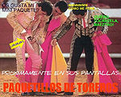
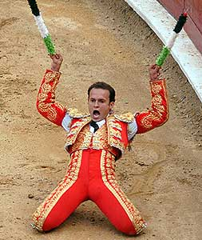
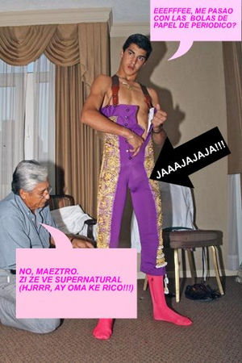
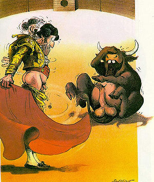
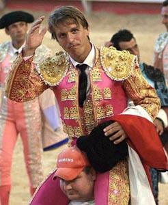

Paquetillos de toreros
 De: La Frikipedia, la enciclopedia extremadamente seria.
De: La Frikipedia, la enciclopedia extremadamente seria.
Parte vital de los toreros y del ritual toricida ya que sin el paquetillo, el torero no podría hacer bizquear a los toros al colocar la entrepierna entre los ojos del animal y así confundirlos; ni forzarlos sexualmente, ni de provocar el ludibrio general del público asistente que es la parte principal de espectáculo toreril.
 A los toricidas les encanta exhibir su paquetillo a todo el mundo.
Orígenes
Existen dos teorías sobre la aparición de los paquetillos:
- Erich von Däniken sostiene que los paquetillos proceden del espacio exterior provocando mutaciones en el ADN de algunos Garrulus Sanguinarium conviertiéndoles en toricidas natos. "Eso no puede ser terrestre", ha afirmado el investigador.
- Sin embargo, Archibald K. Gordon Higgins considera que es por el efecto de la involución de la especie garrulácea ya que la distrofia genital es un efecto de la naturaleza en un intento desesperado de producir impotencia y esterilidad en estos seres para así provocar su extinción total de la faz de la tierra.
 Cuando vean un paquetillo en posición de ataque como en este caso, ¡salgan corriendo sin dilación!!!
Ritual paquetil
 El ritual paquetil es muy importante ya que según la cantidad de relleno dependerá el éxito de la corrida. Fíjense en la pinta
cani del toricida.
Ningún torero tiene su “peine y geniales”, como ellos mismos lo denominan, de un tamaño adecuado; así es que es necesario un ritual específico y muy elaborado para que el paquetillo luzca con todo esplendor en el ritual toreril. Para ello es necesaria la intervención de, al menos, tres personas:
- Una coloca el relleno de goma-espuma en la entrepierna del torero.
- Otra da palmas entusiasmado.
- Otra tira cacahuetes pensando que está en el circo.
La dirección del paquetillo también es importante porque si el torero es diestro deberá colocarlo a la derecha y si es siniestro a la izquierda. Hasta ahora todos se lo colocan a la izquierda porque todos los toreros son siniestros.
Después se reza a la Virgen o patrón de turno para que le proteja su paquetillo que es su bien más preciado y tras esto sale al ruedo.
Paquetillos en el ruedo
 Esta es la auténtica razón por la que los toreros odian a los toros.
Por alguna extraña razón el paquetillo del torero cobra vida en el ruedo y comienza a dar instrucciones al toricida para que realice sus abusos sexuales conforme al reglamento del Kama-chunga.
Como el toro es más inteligente que el torero procede a aturdirlo, bien con el brillo del traje de luces, bien colocando el paquetillo entre los ojos del morlaco que le provoca bizqueo crónico.
Como esto no es suficiente, entre el picador y el banderillero se encargarán de desangrar al animal para que pierda fuerza y así el toricida pueda hacer sus poses chulescas y lucir su paquetillo ante un público enfebrecido.
Paquetillofilia y paquetillofobia
Son paquetillófilos aquellos que consideran eróticas las partes pudendas de los toreros, por lo que se disputan entre ellos el privilegio de tenerlas en la nuca. De ahí el ritual de salir en hombros, lo que crea grandes envidias entre el resto de los aficionados. Esta variedad de perversión sexual se llama nucopaquetillofilia.
Los paquetillófilos corresponden el 0,1% de la población, el resto padece paquetillofobia, es decir, horror natural y justificado ante la presencia de un paquetillo ya que pueden ser muy peligrosos.
¿Sabías que...
 El individuo de la gorra se siente un privilegiado al sentir el contacto del paquetillo en su nuca.
- ...los paquetillos tienen vida propia e independiente?
- ...que los paquetillos tienen como mascotas a los toreros?
- ...que los paquetillos son en realidad furúculos gigantes?
- ...que los toreros miden su coeficiente intelectual según el tamaño del paquetillo?
- ...que existen concursos de paquetillos?
- ...que el paquetillo desprende un hedor nauseabundo?
- ...que el resto de la anatomía de un torero también destila un olor nauseabundo?
- ...que tienen el punto G en las glándulas sudoríparas y por eso son tan hediondos?
- ...que el punto G de los toreros es en realidad una verruga infectada y purulenta?
- ...que todas las parejas de los toreros tienen taras mentales, visuales y olfativas?
- ...que los toricidas se trasplantan vello del pubis entre las cejas porque creen que ser cejijunto es más atractivo?
- ...que en realidad se injertan la cara por el culo y viceversa porque sinó aterrorizarían a todo el mundo?
- ...que todos los toricidas tienen disfunciones eréctiles que no se soluciona ni con dos toneladas de viagra al día?
- ...que la sempiterna expresión de tener el ceño fruncido es por estreñimiento testicular?
- ...que también tienen estreñimiento intestinal por culpa de la faja apretada?
- ...pero que sin embargo, tienen diarrea mental y por ello tienen las nalgas tan prietas?
- ...que todos los toreros son zoófilos y por ello fuerzan sexualmente a los toros?
- ...que en realidad odian a los toros porque tienen envidia de que estén mejor dotados que ellos?
- ...que los toricidas acuden cada año a Tordesillas con la esperanza de arrancarle los testículos a los toros para injertárselos en la entrepierna?
- ...que practican otras perversiones sexuales como el sadomasoquimo, exhibicionismo y la necrofilia?
- ...que practican el goatse con los cuernos de los toros?
- ...que por la distrofia de sus próstatas sólo pueden reproducirse por mitosis (dividiéndose ellos mismos como las células) o por esporas?
- ...que cuando miccionan en realidad están marcando su territorio?
- ...que su micción tiene una coloración verdosa?
- ...que defecar es su medio natural de comunicación?
- ...que de vez en cuando tiene que venir un veterinario a apretarle las glándulas anales para que liberen el exceso de fluidos...o es el dentista?
- ...que Charles Manson tiene pesadillas recurrentes con los paquetillos de los toreros?
- ...que las mamás más crueles no llaman al coco sino al paquetillo de un torero para que se lleve al niño malo?
- ...que cuando un toro acierta a dar una cornada justo al centro de un paquetillo un angelito gana sus alas?
- ...que los aficionados al toreo son todos paquetillófilos?
- ...que Ed Wood hizo una película sobre paquetillos mutantes?
- ...que la niña de El exorcista, en realidad fue poseída por un paquetillo?
- ...que Hitler invadió Polonia provocando la Segunda Guerra Mundial porque tenía alucinaciones con paquetillos?
- ...que el niño de El sexto sentido en ocasiones veía paquetillos?
- ...que si miras de cerca a un paquetillo tiene la cara de Joaquin Sabina?
- ...que tienes un paquetillo justo detrás tuyo a punto de atacarte?
Veáse también
Autor(es):
- Spooky
- Veni Vidi Vici
- Dark temptation
- Dancob
Frikipedia 2005-2016, Licencia
GFDL 1.2 - Extraído por FrikiLeaks